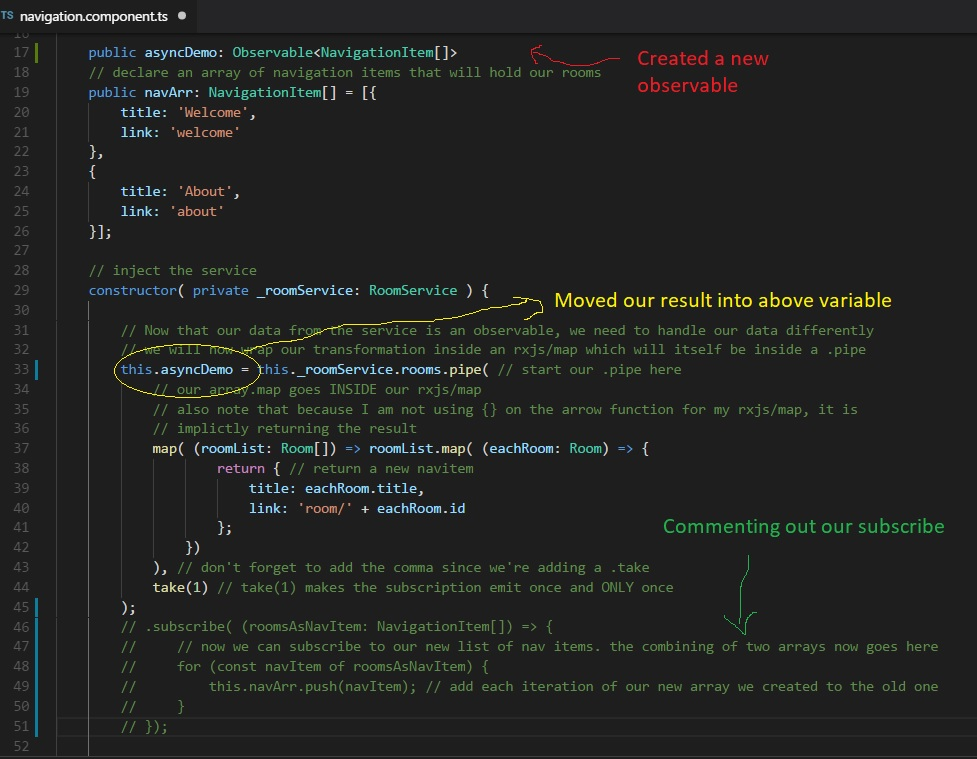
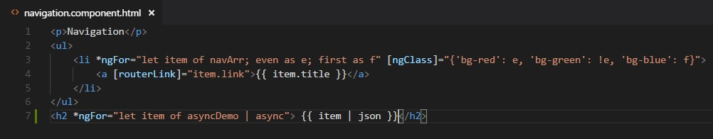

This should be a quick one, I mentioned earlier that when it comes to observables, if you don't subscribe to them, nothing will happen, but there is an exception to the rule. I'm gonna talk about it now very briefly, and it involves the async pipe.
Mild warning: We will me making some superfluous changes and then immediately reverting them just to demonstrate how the async pipe works. If you don't feel comfortable messing with your code for now and just wanna read along, that's cool.
Otherwise, let's go into the navigation component and comment out our .subscribe portion of the area where we called our observable. 
Since we commented our our subscribe, this is essentially dead code. What we're going to do is instead of putting the result of our observable in a variable, we are going to display the observable itself in the html. To do so, we will need to put our observable that we mapped inside a variable so that we can bind to it in the html:
Now things get neat. We're going to display the results in our html by binding to it with our interpolation brackets {{ }} and after the variable name we will add the | async, which is our async pipe.
Check out the result. Our array of navigation items is displaying inside that *ngFor loop we made, and we didn't have to subscribe to it.
Is it REALLY not being subscribed to?
Awfully good intuition for a 1 year old. The async pipe automatically subscribes to the result and handles the unsubscription for you. The catch here is two fold: You have to me comfortable handling your data inside a map since any logic will have to happen in there. Secondly, you can only use the async pipe on observables you haven't already subscribed to.
All of that said, the async pipe is super useful and you should try to use it wherever you can.